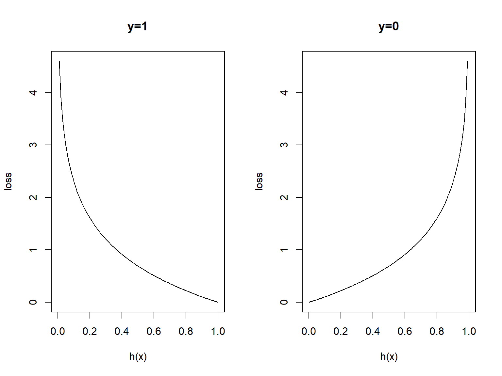

Introduction to neural networks and deep learning
Computation unit
Consider a supervised learning problem where we have access to labeled training examples \((x^{(i)}, y^{(i)})\). Neural networks give a way of defining a complex, non-linear form of hypotheses \(h_\Theta(x)\), with parameters \(\Theta\) (also called weights) that we can fit to our data. To describe neural networks, we will begin by describing the simplest possible neural network, one which comprises a single . We will use the following diagram (Fig. 1) to denote a single neuron:

This is a computational unit that takes as input \(x=(x_0,x_1,x_2,x_3)\) (\(x_0\) = +1, called bias), and outputs \(h_{\theta}(x) = f(\theta^\intercal x) = f(\sum_i \theta_ix_i)\), where \(f:\mathbb{R}\mapsto \mathbb{R}\) is called the . In these notes, we will choose \(f(\cdot)\) to be the sigmoid function:
\[ f(z)=\frac{1}{1+e^{-z}} \]
Although these notes will use the sigmoid function, it is worth noting that another common choice for \(f\) is the hyperbolic tangent, or tanh, function:
\[ f(z)=\frac{e^{z}-e^{-z}}{e^{z}+e^{-z}} \]
The tanh(z) function is a rescaled version of the sigmoid, and its output range is \([-1,1]\) instead of \([0,1]\).
Finally, one identity that will be useful later: If \(f(z)=1/(1+e^z)\) is the sigmoid function, then its derivative is given by \(f'(z)=f(z)(1-f(z))\). If \(f\) is the tanh function, then its derivative is given by \(f'(z)=1-(f(z))^2\). You can derive this yourself using the definition of the sigmoid (or tanh) function.
In modern neural networks, the default recommendation is to use the rectified linear unit or ReLU defined by the activation function \(f(z)=\max\{0,z\}\) (Fig. 2). However, the function remains very close to linear, in the sense that is a piecewise linear function with two linear pieces. Because rectified linear units are nearly linear, they preserve many of the properties that make linear models easy to optimize with gradient based methods. They also preserve many of the properties that make linear models generalize well.
Historically, the sigmoid was the mostly used activation function since it is differentiable and allows to keep values in the interval \([0,1]\). Nevertheless, it is problematic since its gradient is very close to 0 when \(|x|\) is not close to 0. With neural networks with a high number of layers (which is the case for deep learning), this causes troubles for the backpropagation algorithm to estimate the parameter (backpropagation is explained in the following). This is why the sigmoid function was supplanted by the rectified linear function. This function is not differentiable in 0 but in practice this is not really a problem since the probability to have an entry equal to 0 is generally null. The ReLU function also has a sparsification effect. The ReLU function and its derivative are equal to 0 for negative values, and no information can be obtain in this case for such a unit, this is why it is advised to add a small positive bias to ensure that each unit is active.

Neural network formulation
A neural network is put together by hooking together many of our simple , so that the output of a can be the input of another. For example, here (Fig.3) is a small neural network

In this figure, we have used circles to also denote the inputs to the network. The circles labeled +1 are called bias units, and correspond to the intercept term. The leftmost layer of the network is called the input layer, and the rightmost layer the output layer (which, in this example, has only one node). The middle layer of nodes is called the hidden layer, because its values are not observed in the training set. We also say that our example neural network has 3 input units (not counting the bias unit), 3 hidden units, and 1 output unit.
Observe that (Figure 3):
From input layer to layer 2 we implement a non-linear transformation, getting a new set of complex features.
From layer 2 to output layer we implement a logistic regression on the set of .
Then, the ouput of the neural network is of the form:
\[ h_{\theta}(x)=\frac{1}{1+e^{-\theta^\intercal x}} \]
Recall that, in logistic regression, we use the model \[ \log\frac{p(Y=1|x)}{1-p(Y=1|x)}=\theta^\intercal x \]
We can isolate \(p(Y=1|x)\). Taking logs in both sides, we have:
\[ \frac{p(Y=1|x)}{1-p(Y=1|x)}=e^{\theta^\intercal x} \] Thus \[ p(Y=1|x)=\frac{e^{\theta^\intercal x}}{1+e^{\theta^\intercal x}}=\frac{1}{1+e^{-\theta^\intercal x}} \]
Observe that, when the activation function of the output node is the sigmoid activation function, the output coincides with a logistic regression on complex features which result from passing the input vector through all layers until it reaches the output node.
Then, with \(h_{\theta}(x)\), the output of the NN, we are estimating \(p(Y=1|x)\).
We will let \(n_l\) denote the number of layers in our network, thus \(n_l=3\) in our example. We label layer \(l\) as \(L_l\), so layer \(L_1\) is the input layer, and layer \(L_{n_l}=L_3\) the output layer. Our neural network has parameters \(\Theta=(\Theta^{(1)},\Theta^{(2)})\), where we will write \(\theta^{(l)}_{ij}\) to denote the parameter (or weight) associated with the connection between unit \(j\) in layer \(l\), and unit \(i\) in layer \(l+1\). Thus, in our example, we have \(\Theta^{(1)}\in\mathbb{R}^{3\times 4}\), and \(\Theta^{(2)}\in\mathbb{R}^{1\times 4}\), Note that bias units don’t have inputs or connections going into them, since they always output the value +1. We also let \(s_l\) denote the number of nodes in layer \(l\) (not counting the bias unit).
We will write \(a^{(l)}_i\) to denote the activation (meaning output value) of unit \(i\) in layer \(l\). For \(l=1\), we also use \(a^{(1)}_i=x_i\) to denote the \(i\)-th input.
Given a fixed setting of the parameters \(\Theta\), our neural network defines a hypothesis \(h_{\Theta}(x)\) that outputs a real number.
Specifically, the computation that this neural network represents is given by: \[\begin{eqnarray} a_1^{(2)}&=&f(\theta_{10}^{(1)}+\theta_{11}^{(1)}x_1+\theta_{12}^{(1)}x_2+\theta_{13}^{(1)}x_3)\\ a_2^{(2)}&=&f(\theta_{20}^{(1)}+\theta_{21}^{(1)}x_1+\theta_{22}^{(1)}x_2+\theta_{23}^{(1)}x_3)\\ a_3^{(2)}&=&f(\theta_{30}^{(1)}+\theta_{31}^{(1)}x_1+\theta_{32}^{(1)}x_2+\theta_{33}^{(1)}x_3)\\ h_{\Theta}(x)&=&a_1^{(3)}=f(\theta_{10}^{(2)}+\theta_{11}^{(2)}a_1^{(2)}+\theta_{12}^{(2)}a_2^{(2)}+\theta_{13}^{(2)}a_3^{(2)}) \end{eqnarray}\] In the sequel, we also let \(z_i^{(l)}\) denote the total weighted sum of inputs to unit \(i\) in layer \(l\), including the bias term (e.g., \(z_i^{(2)}=\theta_{i0}^{(1)}+\theta_{i1}^{(1)}x_1+\theta_{i2}^{(1)}x_2+\theta_{i3}^{(1)}x_3\)), so that \(a_i^{(l)}=f(z_i^{(l)})\).
Note that this easily lends itself to a more compact notation. Specifically, if we extend the activation function \(f(\cdot)\) to apply to vectors in an elementwise fashion (i.e., \(f([z_1,z_2,z_3]) = [f(z_1), f(z_2),f(z_3)]\)), then we can write Equations (1-4) more compactly as:
\[\begin{eqnarray} z^{(2)}&=&\Theta^{(1)}x\nonumber\\ a^{(2)}&=&f(z^{(2)})\nonumber\\ z^{(3)}&=&\Theta^{(2)}a^{(2)}\nonumber\\ h_{\Theta}(x)&=&a^{(3)}=f(z^{(3)})\nonumber \end{eqnarray}\]
More generally, recalling that we also use \(a^{(1)}=x\) to also denote the values from the input layer, then given layer \(l\)’s activations \(a^{(l)}\), we can compute layer \(l+1\)’s activations \(a^{(l+1)}\) as: \[\begin{eqnarray} z^{(l+1)}&=&\Theta^{(l)}a^{(l)}\\ a^{(l+1)}&=&f(z^{(l+1)}) \end{eqnarray}\]
In matrix notation
\[ z^{(l+1)}= \begin{bmatrix} z_1^{(l+1)}\\ z_2^{(l+1)}\\ \vdots\\ z_{s_{l+1}}^{(l)} \end{bmatrix}= \begin{bmatrix} \theta_{10}^{(l)}& \theta_{11}^{(l)}&\theta_{12}^{(l)}&...&\theta_{1s_{l}}^{(l)}&\\ \theta_{20}^{(l)}& \theta_{21}^{(l)}&\theta_{22}^{(l)}&...&\theta_{2s_{l}}^{(l)}&\\ \vdots & \vdots& \vdots & \vdots & \vdots\\ \theta_{s_{l+1}0}^{(l)}& \theta_{s_{l+1}1}^{(l)}&\theta_{s_{l+1}2}^{(l)}&...&\theta_{s_{l+1}s_{l}}^{(l)}&\\ \end{bmatrix} \cdot\begin{bmatrix} 1\\ a_1^{(l)}\\ a_2^{(l)}\\ \vdots\\ a_{s_l}^{(l)} \end{bmatrix} \] The activation
\[ a^{(l+1)}= \begin{bmatrix} a_1^{(l+1)}\\ a_2^{(l+1)}\\ \vdots\\ a_{s_{l+1}}^{(l)} \end{bmatrix}=f(z^{(l+1)})=\begin{bmatrix} f(z_1^{(l+1)})\\ f(z_2^{(l+1)})\\ \vdots\\ f(z_{s_{l+1}}^{(l)}) \end{bmatrix} \]
By organizing our parameters in matrices and using matrix-vector operations, we can take advantage of fast linear algebra routines to quickly perform calculations in our network. This process is call forward propagation.
We have so far focused on one example neural network, but one can also build neural networks with other architectures (meaning patterns of connectivity between neurons), including ones with multiple hidden layers. The most common choice is a \(n_l\)-layered network where layer 1 is the input layer, layer \(n_l\) is the output layer, and each layer \(l\) is densely connected to layer \(l+1\). In this setting, to compute the output of the network, we can successively compute all the activations in layer \(L_2\), then layer \(L_3\), and so on, up to layer \(L_{nl}\) , using Equations (5-6). This is one example of a feedforward neural network (FNN), since the connectivity graph does not have any directed loops or cycles.
Neural networks can also have multiple output units. For example, in (Fig. 4) we can see a network with two hidden layers layers \(L_2\) and \(L_3\) and four output units in layer \(L_4\), where bias of each layer were omited.

To train this network, we would need training examples \((x^{(i)},y^{(i)})\) where \(y^{(i)}\in\mathbb{R}^4\). This sort of network is useful if there’re multiple outputs that you’re interested in predicting. For example, in a medical diagnosis application, the vector \(x\) might give the input features of a patient, and the different outputs \(y_i\)’s might indicate presence or absence of different diseases.
The binary cross-entropy loss function
As we can say previously, when the activation function of the output node is the sigmoid activation function, the output of the NN is of the form:
\[ h_{\theta}(x)=\frac{1}{1+e^{-\theta^\intercal x}} \]
We need to use a proper (convex) loss function to fit this kind of output values. We can not use the squared error loss, because the minimization of
\[ l(h_\theta(x),y)=(y-\frac{1}{1+e^{-\theta^\intercal x}})^2 \]
is not a convex problem.
Alternativelly, we use the loss function \[ l(h_\theta(x),y)=\big\{\begin{array}{ll} -\log h_\theta(x) & \textrm{if }y=1\\ -\log(1-h_\theta(x))& \textrm{if }y=0 \end{array} \]
We can take a look on the graphical representation of the loss function.
We can write the loss function in a compact formulation \[ l(h_\theta(x),y)=-y\log h_\theta(x) - (1-y)\log(1-h_\theta(x)) \] This loss is called binary cross-entropy loss.
And, using the cross-entropy loss, the cost function is of the form: \[ J(\theta)=-\frac{1}{n}\big[\sum_{i=1}^ny^{(i)}\log h_\theta(x^{(i)})+(1-y^{(i)})\log(1-h_\theta(x^{(i)}))\big] \] And is a convex optimization problem.
Regularized cost function
Let us suppose a multilabel problem (see Fig. 4). In a neural network (\(h_\theta(x)\in\mathbb{R}^K\), and \((h_\theta(x))_k\) denotes the \(k\)-th output), the cost function (called binary cross-entropy) is of the form
\[\begin{equation}\label{nn1} J(\Theta)=-\frac{1}{n}\big[\sum_{i=1}^n \sum_{k=1}^K y_k^{(i)}\log( h_\theta(x^{(i)}))_k+(1-y_k^{(i)})\log(1-(h_\theta(x^{(i)}))_k)\big]+\lambda\sum_{l=1}^{L-1}\sum_{i=1}^{s_l}\sum_{j=1}^{s_{l+1}} (\theta_{ji}^{(l)})^2 \end{equation}\]
Notice that, we don’t regularize the bias units are not included in the regularization.
Algorithm for optimization the cost function.
Regression task
When we are addressing a regression problem, a convenient activation function on the output node is linear, here we can use the squared error loss function.
Gradient descent
We saw in the previous section that training a network corresponds to choosing the parameters, that is, the weights and biases, that minimize the cost function (see Fig. 5). The weights and biases take the form of matrices and vectors, but at this stage it is convenient to imagine them stored as a single vector that we call \(\theta\). Generally, we will suppose \(\theta\in\mathbb{R}^p\), and write the cost function as \(J(\theta)\) to emphasize its dependence on the parameters. So Cost \(J: \mathbb{R}^p\rightarrow \mathbb{R}\).

We now introduce a classical method in optimization that is often referred to as steepest descent or gradient descent. The method proceeds iteratively, computing a sequence of vectors in \(\mathbb{R}^p\) with the aim of converging to a vector that minimizes the cost function. Suppose that our current vector is \(\theta\). How should we choose a perturbation, \(\Delta\theta\), so that the next vector, \(\theta+\Delta\theta\), represents an improvement? If \(\Delta\theta\) is small, then ignoring terms of order \(||\Delta\theta||^2\), a Taylor series expansion gives
\[ J(\theta+\Delta\theta)\approx J(\theta)+\sum_{i=1}^p\frac{\partial J(\theta)}{\partial\theta_i}\Delta\theta_i \] Here \(\frac{\partial J(\theta)}{\partial\theta_i}\) denotes the partial derivative of the cost function with respect to the \(i\)-th weight. For conveniende, we will let \(\nabla J(\theta)\in\mathbb{R}^p\) denote the vector of partial derivatives, known as the gradient, so that \[\begin{equation}\label{g1} \nabla J(\theta)=\big(\frac{\partial J(\theta)}{\partial\theta_1},...,\frac{\partial J(\theta)}{\partial\theta_p}\big)^\intercal \end{equation}\] Then, \[\begin{equation}\label{g2} J(\theta+\Delta\theta)\approx J(\theta)+\nabla J(\theta)^\intercal\Delta\theta \end{equation}\]
Our aim is to reduce the value of the cost function. The relation (\(\ref{g2}\)) motivates the idea of choosing \(\Delta\theta\) to make \(\nabla J(\theta)^\intercal\Delta\theta\) as negative as possible. We can address this problem via the Cauchy-Schwarz inequality, which states that for any \(f,g\in\mathbb{R}^p\), we have \(|f^\intercal g|\leq ||f||\cdot ||g||\). Moreover, the two sides are equal if and only if \(f\) and \(g\) are linearly dependent (meaning they are parallel).
So the most negative that \(f^\intercal g\) can be is \(-||f||\cdot||g||\), which happens when \(f=-g\). Hence we should choose \(\Delta\theta\) to lie in the direction of \(-\nabla J(\theta)\). Keeping in mind that (\(\ref{g2}\)) is an approximation that is relevant only for small \(\Delta\theta\), we will limit ourselves to a small step in that direction. This leads to the update \[\begin{equation}\label{g3} \theta \rightarrow \theta-\eta\nabla J(\theta) \end{equation}\]
Here \(\eta\) is small stepsize that, in this context, is known as the learning rate. This equation defines the steepest descent method. We choose an initial vector and iterate (\(\ref{g3}\)) until some stopping criterion has been met, or until the number of iterations has exceeded the computational budget.
Repeat:
\[ \theta_j=\theta_j-\eta\frac{\partial}{\partial\theta_j}J(\theta) \] \[ \qquad \textrm{ simultaneously update all }\qquad \theta_j \]
\(\eta\in (0,1]\) denotes the learning parameter.
We aim to minimice the cost function \[ \underset{\theta}{\textrm{min }}J(\theta) \]
In order to use gradient descent, we need to compute \(J(\theta)\) and the partiall derivative terms \[ \frac{\partial}{\partial\theta_j}J(\theta) \]
Initialization
The input data have to be normalized to have approximately the same range. The biases can be initialized to 0. They also cannot be initialized with the same values, otherwise, all the neurons of a hidden layer would have the same behavior. Perhaps the only property known with complete certainty is that the initial parameters need to break symmetry between different units. We generally initialize the weights at random: the values \(\theta_{ij}^{(l)}\) are i.i.d. Uniform on \([-c,c]\) with possibly \(c= 1/\sqrt{N_l}\) where \(N_l\) is the size of the hidden layer \(l\). We also sometimes initialize the weights with a normal distribution \(N(0,0.01)\).
Stochastic Gradient
Algorithm for optimization the cost function. When we have a large number of parameters and a large number of training points, computing the gradient vector (\(\ref{g1}\)) at every iteration of the steepest descent method (\(\ref{g3}\)) can be prohibitively expensive because we have to sum across all training points (for instance in Big Data). A much cheaper alternative is to replace the mean of the individual gradients over all training points by the gradient at a single, randomly chosen, training point. This leads to the simplest form of what is called the stochastic gradient method. A single step may be summarized as
Notice we have included \(x^{(i)}\) in the notation of \(J(\theta;x^{(i)})\) to remark the dependence. In words, at each step, the stochastic gradient method uses one randomly chosen training point to represent the full training set. As the iteration proceeds, the method sees more training points. So there is some hope that this dramatic reduction in cost-per-iteration will be worthwhile overall. We note that, even for very small \(\eta\), the update (\(\ref{g4}\)) is not guaranteed to reduce the overall cost function we have traded the mean for a single sample. Hence, although the phrase stochastic gradient descent is widely used, we prefer to use stochastic gradient.
The version of the stochastic gradient method that we introduced in (\(\ref{g4}\)) is the simplest from a large range of possibilities. In particular, the index \(i\) in (\(\ref{g4}\)) was chosen by sampling with replacement after using a training point, it is returned to the training set and is just as likely as any other point to be chosen at the next step. An alternative is to sample without replacement; that is, to cycle through each of the \(n\) training points in a random order. Performing \(n\) steps in this manner, refered to as completing an epoch, may be summarized as follows:
If we regard the stochastic gradient method as approximating the mean over all training points by a single sample, then it is natural to consider a compromise where we use a small sample average. For some \(m<<n\) we could take steps of the following form.
In this iteration, the set \(\{x^{(k_i)}\}_{i=1}^m\) is known as a mini-batch. Because the stochastic gradient method is usually implemented within the context of a very large scale computation, algorithmic choices such as mini-batch size and the form of randomization are often driven by the requirements of high performance computing architectures. Also, it is, of course, possible to vary these choices, along with others, such as the learning rate, dynamically as the training progresses in an attempt to accelerate convergence.
Back propagation
Backpropagation is the algorithm used to compute the gradients of the network. This procedure was developed by several authors in the decade of the 60’s but is Paul J. Werbos, (1974) in his thesis when demonstrates the use of this algorithm for ANN. Years later, (David, E. 1986) presents the modern way to apply this technique to ANN, and sets the basis of the algorithm in use today. In this paper, the authors presents a new method capable to change the predictions towards a desired output, they called it the delta rule.
This rule consist in compute the total error for the network and check how the error changes when certain elements from the network changes its value. How do we compute this changes? differentiating the cost function with regard to each element in the network would give us a measure of how much each element is contributing to the total error of the network, this is, computing the gradient of the cost function we can know how the total error changes with regard to each element, and therefore apply the delta rule.
The cost function is an intricate composed function which contains the weights of all layers, the problem now is that the computations of this gradients are not straightforward as in a simple function, a node from a layer is the result of the composition of all the nodes from previous layers. To overcome it, Backpropagation uses the chain rule of differential calculus to compute the gradients of each element in the neural network, it contains two main phases referred to as the forward phase and backward phase:
Example of backpropagation
We aim to minimice the cost function
\[ \underset{\Theta}{\textrm{min }}J(\Theta) \]
In order to use gradient descent, we need to compute \(J(\Theta)\) and the partiall derivative terms \[ \frac{\partial}{\partial\theta_{ij}^{(l)}}J(\Theta) \]
We compute \(J(\Theta)\) from (\(\ref{nn1}\)). How can we compute the partial derivative terms? Given a \((x,y)\). The cross entropy error for a single example with \(K\) independent targets is given by the sum \[\begin{eqnarray} J(\Theta)&=&-\sum_{k=1}^K\Big(y_k\log\big( h_\theta(x)\big)_k+(1-y_k)\log\big(1-(h_\theta(x)\big)_k\Big)\\ &=&-\sum_{k=1}^K\Big(y_k\log a_k^{(3)}+(1-y_k)\log(1-a_k^{(3)})\Big) \end{eqnarray}\]
where \(y=(y_1,...,y_K)^\intercal\) is the target vector and \(a^{(3)}=(a_1^{(3)},...,a_K^{(3)})^\intercal\) is the output vector. In this architecture (see figure 5) the outputs are computed by applying the sigmoid function to the weights sums of the hidden layer activations. \[\begin{eqnarray} a_k^{(3)}&=&\frac{1}{1+e^{-z_k^{(3)}}}\\ z_k^{(3)}&=&\sum_j a_j^{(2)} \theta_{kj}^{(2)} \end{eqnarray}\]

We can compute the derivative of the error with respect to each weight connecting the hidden units to the output units using the chain rule. \[ \frac{\partial J}{\partial \theta_{kj}^{(2)} }=\frac{\partial J }{\partial a_k^{(3)}}\frac{\partial a_k^{(3)}}{\partial z_k^{(3)}}\frac{\partial z_k^{(3)}}{\partial \theta_{kj}^{(2)}} \]
Examining each factor in turn,
\[\begin{eqnarray} \frac{\partial J }{\partial a_k^{(3)}} &=&-\frac{y_k}{a_k^{(3)}}+\frac{1-y_k}{1-a_k^{(3)}}\\ &=&\frac{a_k^{(3)}-y_k}{a_k^{(3)}(1-a_k^{(3)})}\\ \frac{\partial a_k^{(3)}}{\partial z_k^{(3)}}&=&a_k^{(3)}(1-a_k^{(3)})\\ \frac{\partial z_k^{(3)}}{\partial \theta_{kj}^{(2)}}&=&a_j^{(2)} \end{eqnarray}\]
Combining things back together, \[ \frac{\partial J}{\partial z_k^{(3)}}=a_k^{(3)}-y_k \] and \[ \frac{\partial J}{\partial \theta_{kj}^{(2)} }=(a_k^{(3)}-y_k)a_j^{(2)} \]
The above gives us the gradients of the cost with respect to the weights in the last layer of the network, but computing the gradients with respect to the weights in lower layers of the network (i.e. connecting the inputs to the hidden layer units) requires another application of the chain rule. This is the backpropagation algorithm.
It is useful to calculate the quantity \(\frac{\partial J}{\partial z_j^{(2)}}\) where \(j\) indexes the hidden units,
\[ z_j^{(2)}=\sum_s a_s^{(1)} \theta_{js}^{(1)}=\sum_s x_s \theta_{js}^{(1)} \]
is the weigthed input at hidden unit \(j\), and \[ a_j^{(2)}=\frac{1}{1+e^{-z_j^{(2)}}} \] is the activation at unit \(j\).
We have
\[\begin{eqnarray} \frac{\partial J}{\partial z_j^{(2)}}&=&\sum_{k}^K\frac{\partial J}{\partial z_k^{(3)}}\frac{\partial z_k^{(3)}}{\partial a_j^{(2)}}\frac{\partial a_j^{(2)}}{\partial z_j^{(2)}}\\ &=&\sum_{k}^K((a_k^{(3)}-y_k))(\theta_{kj}^{(2)})(a_j^{(2)}(1-a_j^{(2)})) \end{eqnarray}\]
Then a weight \(\theta_{js}^{(1)}\) connecting input unit \(j\) to hidden unit \(s\) has gradient
\[\begin{eqnarray} \frac{\partial J}{\partial \theta_{js}^{(1)}}&=&\frac{\partial J}{\partial z_j^{(2)}}\frac{\partial z_j^{(2)}}{\partial \theta_{js}^{(1)}}\\ &=&\sum_{k}^K((a_k^{(3)}-y_k))(\theta_{kj}^{(2)})(a_j^{(2)}(1-a_j^{(2)}))(x_s)\\ &=&a_j^{(2)}(1-a_j^{(2)})\Big(\sum_{k}^K(a_k^{(3)}-y_k)\theta_{kj}^{(2)}\Big)x_s \end{eqnarray}\]
By recursively computing the gradient of the error with respect to the activity of each neuron, we can compute the gradients for all weights in a network.
When a classification task has more than two classes, it is standard to use a softmax output layer. The softmax function provides a way of predicting a discrete probability distribution over the classes. We again use the cross-entropy error function, but it takes a slightly different form. The softmax activation of the \(k\)-th output unit is \[ a_k^{(3)}=\frac{ e^{z_k^{(3)}} }{ \sum_j^Ke^{z_j^{(3)}} } \] and the categorical cross entropy cost function for multi-class output is \[ J(\Theta)=-\sum_j^Ky_j\log(a_j^{(3)}) \]
Optimizers
There are a multitude of “tricks of the trade” in fitting or “learning” a neural network, and many of them are connected with gradient descent. Since the choice of the learning rate is delicate and very influent on the convergence of the SGD algorithm, variations of the algorithm have been proposed. They are less sensitive to the learning rate.
Regularization
To conclude, let us say a few words about regularization. We have already mentioned L2 or L1 penalization; we have also mentioned early stopping. For deep learning, the mostly used method is the dropout. It was introduced by Hinton et al. (2012). With a certain probability \(p\), and independently of the others, each unit of the network is set to 0. The probability \(p\) is another hyperparameter. It is classical to set it to \(0.5\) for units in the hidden layers, and to \(0.2\) for the entry layer. The computational cost is weak since we just have to set to 0 some weights with probability \(p\). This method improves significantly the generalization properties of deep neural networks and is now the most popular regularization method in this context. The disadvantage is that training is much slower (it needs to increase the number of epochs). Ensembling models (aggregate several models) can also be used. It is also classical to use data augmentation or Adversarial examples.

Universal Approximation Properties and Depth
Hornik (1991) showed that any bounded and regular function \(\mathbb{R}^d\rightarrow\mathbb{R}\) can be approximated at any given precision by a neural network with one hidden layer containing a finite number of neurons, having the same activation function and one linear output neuron. This result was earlier proved by Cybenko (1989) in the particular case of the sigmoid activation function. More precisely, Hornik’s theorem can be stated as follows.
THEOREM. Let \(\phi\) be a bounded, continuous and non decreasing (activation) function. Let \(K_d\) be some compact set in \(\mathbb{R}^d\) and \(C(K_d)\) the set of continuous functions on \(K_d\). Let \(f\in C(K_d)\). Then for all \(\epsilon>0\), there exists \(N\in\mathbb{N}\), real numbers \(v_i\), \(b_i\) and \(\mathbb{R}^d\)-vectors \(w_i\) such that, if we define
\[ F(x) = \sum_{i=1}^Nv_i\phi\big(w_i^Tx+b_i\big) \]
then we have \[ \forall x\in K_d, |F(x)-f(x)|\leq\epsilon. \]
This theorem is interesting from a theoretical point of view. From a practical point of view, this is not really useful since the number of neurons in the hidden layer may be very large.
The universal approximation theorem says that there exists a network large enough to achieve any degree of accuracy we desire, but the theorem does not say how large this network will be. In summary, a feedforward network with a single hidden layer is sufficient to represent any function, but the layer may be infeasibly large and may fail to learn and generalize correctly.
In many circumstances, using deeper models can reduce the number of units required to represent the desired function and can reduce the amount of generalization error. There exist families of functions which can be approximated efficiently by an architecture with depth greater than some value \(d\), but which require a much larger model if depth is restricted to be less than or equal to \(d\). In many cases, the number of hidden units required by the shallow model is exponential in \(p\) (input space dimension).
The strength of deep learning lies in the deep (number of hidden layers) of the networks.
References
Aggarwal, Charu C. Neural networks and deep learning. Berlin, Germany. Springer, 2018.